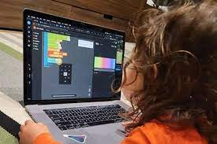
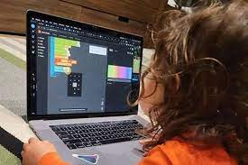
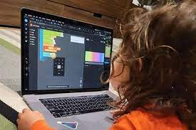

SELAMAT DATANG DI BELAJAR CODING
FACEBOOK-KU

Orde Baru adalah sebutan bagi masa pemerintahan Presiden Soeharto di Indonesia. Orde Baru menggantikan Orde Lama yang merujuk kepada era pemerintahan Soekarno. Lahirnya Orde Baru diawali dengan dikeluarkannya Surat Perintah 11 Maret 1966. Orde Baru berlangsung dari tahun 1966 hingga 1998.
Orde Baru merupakan salah satu istilah yang cukup familiar bagi kita. Menurut KBBI, kata baru berarti menggambarkan suatu hal yang belum pernah ada sebelumnya. Sedangkan orde berarti sistem pemerintahan. Secara terminologi, Orde Baru berarti suatu tatanan seluruh perikehidupan rakyat, bangsa dan negara yang diletakan kembali kepada pelaksanaan Pancasila dan UUD 45 secara murni dan konsekuen. Dari beberapa pendapat tersebut kita simpulkan, bahwa orde baru merupakan sistem pemerintahan di Indonesia yang menggantikan zaman sebelumnya didasarkan atas koreksi terhadap berbagai penyimpangan. Lahirnya Orde Baru diawali dikeluarkannya Surat Perintah 11 Maret 1966 (Supersemar) oleh Presiden Soekarno kepada Letjen Soeharto. Surat berisi instruksi presiden agar Letjen. Soeharto sebagai Menteri Panglima Angkatan Darat untuk mengambil tindakan dalam rangka menjamin keamanan, ketenangan, dan stabilitas pemerintahan demi keutuhan bangsa dan negara Republik Indonesia.